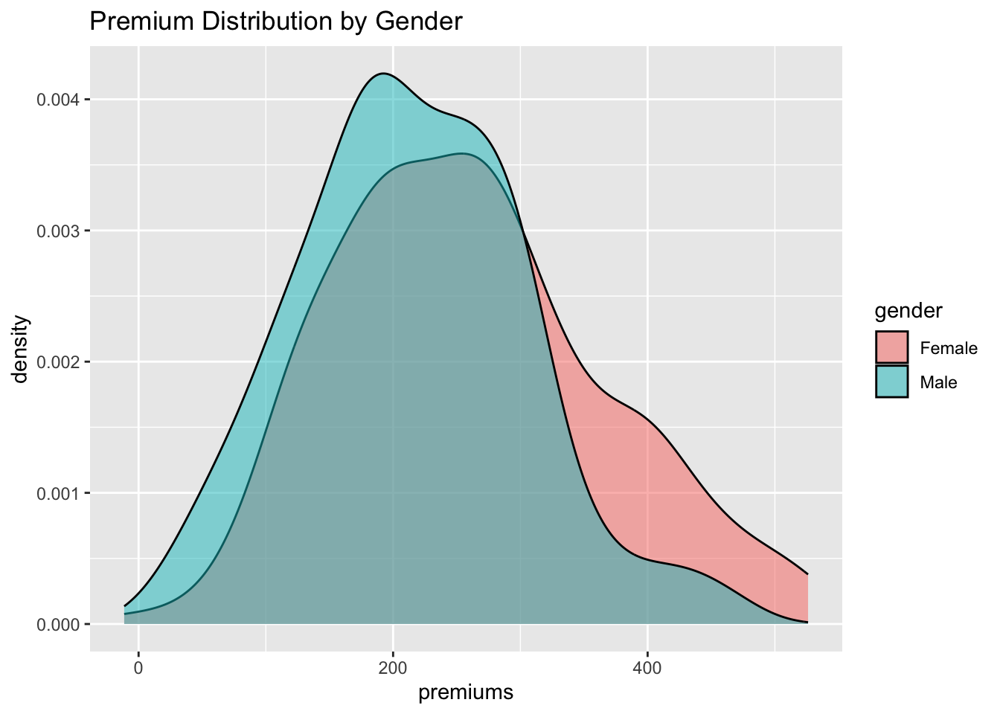

In the ever evolving world of actuarial science, the traditional methods of building models and estimators don’t always stand up to the test of time. Advanced technology and understanding of models has led to the realization that bias is deeply embedded in populations. Luckily, we have new tools to identify and address this issue. In this guide, we will walk through what this bias may look like, what steps can be taken to account for it, and look at an example in code.
1.1What is Bias?
Bias is “a systematic distortion of a statistical result”, as described by Oxford Languages. In other words, bias is as aspect embedded in data that introduces an certain inclination or favor towards a result that otherwise would not exist without the bias.
There are many different kinds of bias, it can look different, be caused by different sources, and effects the data/model differently. Because of this variety, there is no single blanket test to run that can tell us if the model is biased or not. So to be a vigilant actuary, it is important to be aware of how bias may enter our model, how to look and check for bias, and how to address it.
1.1.1Why Do We Care?
Bias can cause incorrect results in models if not addressed correctly. As modern day actuaries, we have a responsibility to build products that are fair and accurate. A poorly made model can cause a model’s algorithm to incorrectly deny claims, charge policyholders the wrong amount, or company to lose money. In a= delicate situation where small errors cause serious impacts on real people, actuaries are always expected to uphold a standard of quality work. In the words of Scott Priebe, the chief actuary at Pacific Life, “Actuaries are servants of the people first, and problem solvers second.”
1.1.2What Does Bias Look Like in Models?
It is important to know that bias can enter data during collection, selection, and design. Just because data is unbiased at one point does not mean it will be permanently. This is especially relevant if you are using data that someone else collected. So here is how we can spot some obvious bias, and later we’ll go over how to find the hidden bias.
Read up on how the data was sampled. Some obvious problems may be obvious if you examine the population and sampling methods used to get the data.
Example: Estimating the average income of adults in a city and only sampling from people living in houses. This would likely cause your estimate to be higher than it should be, because the data excludes anyone living in group housing, like apartments or retirement homes.
Visualizing your data may show you an obvious problem with your data. Making a histogram or scatter plot can show you patterns, gaps, or discrepancies between groups. Depending on your data, it is a good idea to compare the response between any major factor (sex, race, economic status, etc.) as these are the most common places where bias can arise.
If you need help with visualization, here are some places to start:
To get a good idea on what getting started might look like, I will introduce some example data and the model I made from it.
First, I’m going generate data with a clear gender bias. I’ll work with this simple example for the entire guide to show what each step looks like in code. The data I made includes age, gender, numbers of claims, and the premium charged. I then put together a model and created a column of claims that are predicted using the model.
library(dplyr)
Warning: package 'dplyr' was built under R version 4.2.3
Attaching package: 'dplyr'
The following objects are masked from 'package:stats':
filter, lag
The following objects are masked from 'package:base':
intersect, setdiff, setequal, union
library(ggplot2)
Warning: package 'ggplot2' was built under R version 4.2.3
set.seed(123)n <-500age <-sample(18:70, n, replace =TRUE)gender <-sample(c("Male", "Female"), n, replace =TRUE)claims <-rpois(n, lambda =1.2)premium_base <-200age_effect <--3claim_effect <-50premiums <- premium_base + (age_effect * (age -30)) + (claim_effect * claims) +rnorm(n, 0, 50)insurance_data <-data.frame(age, gender, claims, premiums)#Premiums are charged at a higher rate for femalesinsurance_data$premiums <-ifelse(insurance_data$gender =="Female", insurance_data$premiums *1.2, insurance_data$premiums)model =lm(premiums ~ age +factor(gender) + claims, data = insurance_data)summary(model)
Call:
lm(formula = premiums ~ age + factor(gender) + claims, data = insurance_data)
Residuals:
Min 1Q Median 3Q Max
-151.411 -39.441 0.475 33.017 190.876
Coefficients:
Estimate Std. Error t value Pr(>|t|)
(Intercept) 352.5968 8.7808 40.155 <2e-16 ***
age -3.5359 0.1668 -21.192 <2e-16 ***
factor(gender)Male -45.9716 4.9924 -9.208 <2e-16 ***
claims 56.5022 2.2818 24.762 <2e-16 ***
---
Signif. codes: 0 '***' 0.001 '**' 0.01 '*' 0.05 '.' 0.1 ' ' 1
Residual standard error: 55.71 on 496 degrees of freedom
Multiple R-squared: 0.6952, Adjusted R-squared: 0.6933
F-statistic: 377.1 on 3 and 496 DF, p-value: < 2.2e-16
Before you jump into analysis, really think about how your model was built. Who collected the data? Who funded the collection? What was the motivation? Underlying bias can easily be sourced back to one of these reasons.
1.2.2Where to look for Bias
In actuarial models, it is most important in products to assess if policyholders are being charged the correct amount. The goal in assessing bias is seeing if two groups who are very similar with only one difference are being charged differently. With my example data, we will look at if men and women with a similar profile are being charged differently. In reality, factors like accident history, location, vehicle type, and credit score are all considered in premium cost. Some of these factors are not independent and require a more complex model to be accurately fitted. If you do not have a model built from your data here are some resources: https://www.datacamp.com/tutorial/linear-regression-R
If you have dependent or categorical variables that you need to have in your model:
Lastly, there are some important assumption for your data before you start an analysis.
Data should be sufficiently large. While there is not exact threshold, there should at least be over 100 observations. Here is a resource for learning more about selecting sample size: https://pmc.ncbi.nlm.nih.gov/articles/PMC4148275/
If there are subgroups within your data, there should be equal representation of these groups. You can verify this by checking about the data were sampled (blocks, clusters, random sampling).
Make sure your data (or model) are not missing any relevant variables that influence the response (like age for insurance pricing).
Be careful of missing values, and look at where more values are missing before removing them. It’s common to have more missing values in low-income participants, and you could accidentally introduce bias by removing them. If you think you have sensitive missing values, here a two sources to help handle them: https://pmc.ncbi.nlm.nih.gov/articles/PMC3668100/, https://rpubs.com/chibueze99/MissingR
Normality, some tests used in this analysis make this assumption, so it is important to check your data first. Running certain tests on non-normal data can cause misleading results. Here is how you can check any numerical variables using the Shapiro-Wilks Test:
shapiro.test(insurance_data$age)
Shapiro-Wilk normality test
data: insurance_data$age
W = 0.95714, p-value = 7.053e-11
A p-value result that is significant (less that 0.05) means your variable is normally distributed.
Note that if the p-value is between 0.05 and 0.1, you may still say your data is approximately normal, but returning to the visualization step and looking at the distributions would be a good idea.
1.3Bias Analysis
Our first steps into bias analysis are to apply fairness metrics where we think bias could be located. We can start by looking for direct disparity, meaning we are making comparisons between groups to see if we can find a difference that shouldn’t be there.
1.3.1Visual Comparisons
I am first going to check what the premiums looks like between males and females.
ggplot(insurance_data, aes(x = premiums, fill = gender)) +geom_density(alpha =0.5) +labs(title ="Premium Distribution by Gender")

Looking at this graph would raise a red flag to me. Based on previous research, we should expected that females get charged slightly less than males, but this graph tells us otherwise. Since I designed the data I know there is a gender bias, but with real data, this is a definite sign to investigate further.
1.3.2Disparate Impact
This test takes the ratio of the mean predicted premiums by gender. If the results are significantly greater than or less than 1, we can suspect bias between the groups.
Since the result of 1.266 is greater than 1, it suggests bias.
1.3.3Direct Disparity
If you’re still not sure if the bias is present, another simple way to check for bias between groups is to compare means, and then run a t-test to check for a significant difference.
# A tibble: 2 × 2
gender mean_premiums
<chr> <dbl>
1 Female 260.
2 Male 214.
t.test(premiums ~ gender, data = insurance_data)
Welch Two Sample t-test
data: premiums by gender
t = 5.2335, df = 481.14, p-value = 2.488e-07
alternative hypothesis: true difference in means between group Female and group Male is not equal to 0
95 percent confidence interval:
28.70285 63.21201
sample estimates:
mean in group Female mean in group Male
260.0785 214.1211
The results of the t test are significant. This result is interpreted as we have enough evidence to conclude there is a significant difference between the mean premiums of men and women.
1.4 Addressing Bias
Now that we know there is a bias, we want to adjust our model accordingly so that all policyholders are charged a fair amount.
1.4.1Model Correction & Quality
Important Note: Every time you make big changes to your model, you should go back and rerun the previous tests again. Log and compare every version of a model to assess the quality and trade offs.
With the goal of removing the bias from the model, we can reweigh the model and then create a new model. The new model will exclude gender to minimize the bias.
insurance_data$weights <-1/prop.table(table(insurance_data$gender))[insurance_data$gender]model_weighted <-lm(premiums ~ age + claims, data = insurance_data, weights = insurance_data$weights)summary(model_weighted)
Call:
lm(formula = premiums ~ age + claims, data = insurance_data,
weights = insurance_data$weights)
Weighted Residuals:
Min 1Q Median 3Q Max
-202.457 -57.106 -3.597 50.404 303.090
Coefficients:
Estimate Std. Error t value Pr(>|t|)
(Intercept) 325.4959 8.9415 36.40 <2e-16 ***
age -3.4670 0.1803 -19.23 <2e-16 ***
claims 57.3833 2.4658 23.27 <2e-16 ***
---
Signif. codes: 0 '***' 0.001 '**' 0.01 '*' 0.05 '.' 0.1 ' ' 1
Residual standard error: 85.21 on 497 degrees of freedom
Multiple R-squared: 0.6432, Adjusted R-squared: 0.6418
F-statistic: 448.1 on 2 and 497 DF, p-value: < 2.2e-16
When looking at the summary of the new weighted model, we can see the adjusted R squared is smaller than it was before. The adjusted R squared is a metric of how well our model explains the data, so seeing is decrease it not ideal. What this means is that we create a more fair model, but we traded it for a less accurate model. This is a common problem for models with few predictors, and often removing a predictors is not the solution.
1.4.2Need further help with your model?
If the weighted model decrease the quality of your model, here are some other options for how to continue addressing the bias.
Ultimately what you decide to do with your model depends on what you value. What is your model going to be used for? Is fairness or accuracy more important? Do you trust your data to be accurate to the population? Here is a resource to learn more about making decisions for your model and what they mean in the actuarial world. https://www.actuary.org/sites/default/files/2023-07/risk_brief_data_bias.pdf
From this article there is also a flow chart that may help with your process.